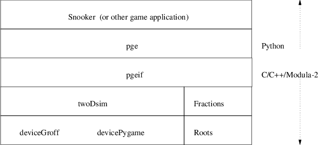

mymodule.i
%module mymodule
%{
extern int sum (int a, int b);
%}
extern int sum (int a, int b);
mymodule.c
int sum (int a, int b)
{
return a + b;
}
$ swig -python mymodule.i
$ libtool --tag=CC --mode=compile gcc -g -I/usr/include/python2.7 \
-c mymodule_wrap.c -o mymodule_wrap.lo $ libtool --tag=CC --mode=compile gcc -g -I/usr/include/python2.7 \ -c mymodule.c -o mymodule.lo $ libtool --tag=CC --mode=link gcc -g mymodule.lo mymodule_wrap.lo \ -rpath ‘pwd‘ -lc -lm -o libmymodule.la $ cp .libs/libmymodule.so _mymodule.so
testsum.py
#!/usr/bin/python import mymodule print mymodule.sum (1, 2)
$ python testsum.py
3
libtool: compile: gcc -g -I/usr/include/python2.7 -c mymodule_wrap.c -fPIC -DPIC -o .libs/mymodule_wrap.o libtool: compile: gcc -g -I/usr/include/python2.7 -c mymodule_wrap.c -o mymodule_wrap.o >/dev/null 2>&1 libtool: compile: gcc -g -I/usr/include/python2.7 -c mymodule.c -fPIC -DPIC -o .libs/mymodule.o libtool: compile: gcc -g -I/usr/include/python2.7 -c mymodule.c -o mymodule.o >/dev/null 2>&1 libtool: link: rm -fr .libs/libmymodule.a .libs/libmymodule.la .libs/libmymodule.lai \ .libs/libmymodule.so .libs/libmymodule.so.0 .libs/libmymodule.so.0.0.0 libtool: link: gcc -shared -fPIC -DPIC .libs/mymodule.o .libs/mymodule_wrap.o \ -L‘pwd‘/lib64 -lc -lm -Wl,-soname -Wl,libmymodule.so.0 -o .libs/libmymodule.so.0.0.0 libtool: link: (cd ".libs" && rm -f "libmymodule.so.0" && ln -s "libmymodule.so.0.0.0" "libmymodule.so.0") libtool: link: (cd ".libs" && rm -f "libmymodule.so" && ln -s "libmymodule.so.0.0.0" "libmymodule.so") libtool: link: ar cru .libs/libmymodule.a mymodule.o mymodule_wrap.o libtool: link: ranlib .libs/libmymodule.a libtool: link: ( cd ".libs" && rm -f "libmymodule.la" && ln -s "../libmymodule.la" "libmymodule.la" )
swig -outdir . -o pgeif_wrap.cxx -c++ -python $(top_srcdir)/i/pgeif.i
$(LIBTOOL) --tag=CC --mode=compile g++ -g -c pgeif_wrap.cxx \
-I/usr/include/python$(PYTHON_VERSION) -o pgeif_wrap.lo
gm2 -c -g -I$(SRC_PATH_PIM) -fcpp -fmakelist \
-I$(top_srcdir)/m2 $(top_srcdir)/m2/pgeif.mod
gm2 -c -g -I$(SRC_PATH_PIM) -fcpp -fmakeinit -fshared \
-I$(top_srcdir) $(top_srcdir)/m2/pgeif.mod
$(LIBTOOL) --tag=CC $(AM_LIBTOOLFLAGS) $(LIBTOOLFLAGS) \
--mode=compile gcc -c $(CFLAGS_FOR_TARGET) $(LIBCFLAGS) \
$(libgm2_la_M2FLAGS) $(srcdir)/pgeif.c -o pgeif.lo
$(LIBTOOL) --tag=CC --mode=compile g++ -g -c _m2_pgeif.cpp -o _m2_pgeif.lo
$(LIBTOOL) --tag=CC --mode=link gcc -g _m2_pgeif.lo $(MY_DEPS) \
pgeif_wrap.lo \
-L$(GM2LIBDIR)/lib64 \
-rpath ‘pwd‘ -liso -lgcc -lstdc++ -lpth -lc -lm -o libpgeif.la
cp .libs/libpgeif.so ../_pgeif.so
cp pgeif.py ../pgeif.py
typedef struct aggregate_t {
int field1;
char field2;
} aggregate;
and also that the shared library can
set the length
pge/i/pgeif.i
...
%include cstring.i
%cstring_output_allocate_size(char **s, int *slen, );
%{
extern "C" void get_cbuf (char **s, int *slen);
extern "C" void get_ebuf (char **s, int *slen);
extern "C" void get_fbuf (char **s, int *slen);
...
%include cstring.i %cstring_output_allocate_size(char **s, int *slen, );
pge/python/pge.py
def runbatch (t):
if t < 0.0:
t = 30.0
_debugf ("runbatch (%f)\n", t)
pgeif.check_objects ()
cData = pgeif.get_cbuf ()
fData = pgeif.get_fbuf ()
_draw_frame (cData, len (cData), fData, len (fData))
pgeif.empty_fbuffer ()
pgeif.empty_cbuffer ()

pge/python/pge.py
#
# _pyg_draw_frame - draws a frame on the pygame display.
#
def _pyg_draw_frame (cdata, clength, fdata, flength):
global nextFrame, call, _record
pge/python/pge.py
if _record:
_begin_record_frame (cdata, clength, fdata, flength)
elif flength > 0:
_draw_background ()
f = _myfile (cdata + fdata)
while f.left () >= 3:
header = struct.unpack ("3s", f.read (3))[0]
header = header[:2]
if call.has_key (header):
f = call[header] (f)
else:
print "not understood header =", header
sys.exit (1)
pge/python/pge.py
if flength > 0:
_draw_foreground ()
if _record:
_end_record_frame ()
if flength > 0:
_doFlipBuffer () # flipping the buffer for an empty frame looks ugly
nextFrame += 1
_debugf ("moving onto frame %d\n", nextFrame)
pge/c/buffers.c
/*
* buffers - wrap the event buffer contents into a binary string.
*/
extern void deviceIf_getFrameBuffer (void **start,
int *length, int *used);
void get_fbuf (void **start, unsigned int *used)
{
int length;
#if !defined (DEBUGGING)
printf ("calling deviceIf_getFrameBuffer\n");
#endif
deviceIf_getFrameBuffer (start, &length, used);
}
This document was produced using groff-1.22.